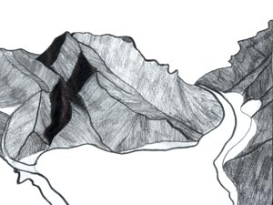

Level 5: Faces in the Land
PLANNING AND ASSESSMENT
Throughout the unit or lesson, teachers should be conferencing both individuals and groups of students whilst encouraging them to respond to and reflect on their own work and to the work of others by:
- reinforcing their knowledge of basic elements and principles
- focusing on specific principles
- using images and artists' works for reference.
The following elements and principles will be the focus for discussion in this learning example. Their use should be studied in the artists' works first.
Elements
- Tone
- Space
- Texture
- Form (mass, volume, weight)
- Line (edge)
- Shape
Principles
- Proportion/scale
- Movement
- Balance,
- Unity, tension
- Contrast and variety
- Emphasis and dominance
More information on art elements
http://www.artlex.com
Possible starting points
Read 'Kopuwai the Water Swallower', or a similar legend where landscape features have been given anthropomorphic connotations, and discuss the relationship between tinana (the body) and whenua (the land) in Māori belief systems. Students should be encouraged to think of other examples they know about where landforms contain a mythical figure.
Discuss the life and work of Tony Fomison. Look at influences on him from art school, Māori elders, his European trip, and Expressionist and Renaissance art works. Then look at his interest in, and work, recording Māori rock drawings. (He surveyed and recorded significant sites on behalf of the Historic Places Trust and the Canterbury Museum,).
Look at the three phases of rock art; archaic, European contact, and post contact. Theo Schoon's studies and photographs of rock art are also relevant here.
Invite students to analyse Fomison's artworks and how he integrates the figure and the landscape. Note how he does this through his use of a limited colour scheme, his strong tonal contrast on forms, and his simplification of land and human forms to emphasise the similarities between them. In his work the land takes on human qualities.
Analyse Fomison's paint techniques noting how he builds rich layers of tonal glazes on top of white grounds.
[Back To Top]
Practical activities for students
Students make small pencil drawings from the images provided by the teacher of works by Fomison. Select from works suggested below. They should focus on the use of exaggerated tonal contrasts and other elements studied (see above).
- Bookend, 1986. Ceramic, 150 x 120 x 11cm
- Use other ceramic pieces from the same period, that show multifaceted head forms in three dimensions. An example is:
- Untitled (Driving Creek), 1986 Earthenware ceramic
- Also use a painting that places a portrait or figure in the land.
Observational drawings
Students could make a series of portrait contour line drawings from life. They could either work in pairs, or individually by choosing a model for the class. Begin with quick warm ups (2–3 minutes). Focus on key contours of the head, using weighted line to show changes or emphasise main features. Use weighted line to indicate interesting details, lines, and surface changes on the face and head.
Follow with a series of tonal drawings, using no line at all but using the drawing medium broadly (e.g., work on the side of a crayon or charcoal, or graphite pencil to make wide marks, which emphasise tonal areas rather than edges). Block in tonal areas. Students should focus on planes and areas rather than edges and lines here. This can be achieved by first using mid tones to block in the whole head, then adding darker areas and use an eraser to lighten.
Do some further tonal drawing simplifying areas of tone by leaving out details, and exaggerating tonal contrasts Refer back to Fomison's works, and students' drawings of his works.
Developmental drawings
Get students to look at an image of Fomison's ceramic bookend and working from one (or more) of their previous drawings, make new drawings, which simplify and distort the head. Discuss how Fomison has done this i.e. the exaggeration of the length of the profile and its extension on a diagonal angle, to create a very elongated chin.
Students could work tone into the negative spaces to intensify the atmosphere of their drawings, referring to Fomison's use of negative space.
Making a series of clay models
Students can use these last drawings as a basis for a series of clay models using both modelling and carving techniques. They should try to achieve the same simplification and distortion of facial features they achieved in their drawings.
Suggestions:
- Keep the models small (15–20 cm height) to allow for an exploration of clay techniques.
- Experiment with combining carving with modelling approaches by allowing models to reach a semi-dry stage suitable for carving. Finer details and changes can be added using carving techniques.
- Excellent clay modelling tools can be made from ice block sticks. Trim these down using craft knives to make a pointed, but still blunted, end. A flat hairpin or bent piece of thin metal can be glued into a hole drilled into dowelling (Try Gorilla glue).
- Turn the models around while making, so the piece is considered in the round.
- When finishing work at the soft stage, work the clay with glad wrap (or other thin plastic) covering it, so that the clay will stay flexible for longer without drying out.
- Interesting textures can be added to the clay surface using plastic as a barrier between the clay and chosen tool.
- One profile or multi profiles could be included (see both approaches in Fomison's three-dimensional pieces).
- Pumice and wax are also suitable materials for modelling (wax) and carving (pumice).
Landscape drawings
Students could draw features of the local landscape, discussed or studied earlier in story or legend, from photographs. If possible, make a class trip to visit the site. They should draw a range of views of the landscape, with a focus on the outlines of rock formations and how they are placed on and within the landscape.
In their drawings, students should extract and define anthropomorphic features from the landscape by looking for profile effects (rocky outcrops or land formations that resemble a facial profile). They could layer bands of land formations to create a sense of recession in space and contrast shapes and sizes within a composition, referring to these features in Fomison's work.

Composition studies
Students should develop their landscape drawings in a series of composition studies.
They could look back to their earlier portrait drawings and clay models for ideas for changes to their landscapes. They should consider:
- which areas could be simplified for effect
- how the anthropomorphic features of the land could be exaggerated even further
- how their drawings relate to the legends studied
- adding tone to the negative and positive areas of their best composition.
Wet media explorations on hessian
Students should look at Fomison's paint techniques again and note how he uses layers of thin glazes of one colour range to create tonal contrasts. Get students to try out this glazing approach on part of their composition in a series of studies.
Firstly, a white ground will need to be painted over several pieces of hessian, and then the selected portion of their composition should be drawn up on each piece. Areas of mid tone should be blocked in over the whole surface of each study, and then successive layers of paint added with slight variation in hue and in depth of tone. Each layer should be left to dry before the next is added so that a series of translucent layers can be built up revealing the layers beneath.
Final painting
A selected final compositional drawing could be adjusted, refined, then painted using the glazing techniques learned in the studies.
[Back To Top]
Materials
The following materials are useful in this activity:
- Pencils, paper, charcoal, crayons, clay, wax, pumice, paint
- Wire cutters, cutting boards, craft knives and clay tools
Assessment
Possible specific learning outcomes include:
Students will be able to:
- apply the techniques taught for distorting and simplifying landscape and portrait subject matter in a series of works (PK)
- use clay processes and materials to create a series of models (PK)
- use glazing processes and materials in a series of works (PK)
- generate, develop and refine ideas in a series of drawings and models based on their study of anthropomorphic landscapes (DI)
- describe and evaluate how techniques of simplification and distortion communicate meaning in sculptural works (their own and artists' works studied) (CI)
- express ideas in a series of works that relate local landscape features to a Māori legend (UC).
[Back To Top]
|